Chapter 5 Lab 5: t-test (Independent Sample)
I think he [Gosset] was really the big influence in statistics⦠he asked the questions and Pearson and Fisher put them into statistical language, and then Neyman came to work with the mathematics. But I think most of it came from Gosset. âF. N. David
This lab is modified and extended from Open Stats Labs. Thanks to Open Stats Labs (Dr. Kevin P. McIntyre) for their fantastic work.
5.1 Do you come across as smarter when people read what you say or hear what you say?
5.1.1 STUDY DESCRIPTION
Imagine you were a job candidate trying to pitch your skills to a potential employer. Would you be more likely to get the job after giving a short speech describing your skills, or after writing a short speech and having a potential employer read those words? That was the question raised by Schroeder and Epley (2015).The authors predicted that a personâs speech (i.e., vocal tone, cadence, and pitch) communicates information about their intellect better than their written words (even if they are the same words as in the speech).
To examine this possibility, the authors randomly assigned 39 professional recruiters for Fortune 500 companies to one of two conditions. In the audio condition, participants listened to audio recordings of a job candidateâs spoken job pitch. In the transcript condition, participants read a transcription of the job candidateâs pitch. After hearing or reading the pitch, the participants rated the job candidates on three dimensions: intelligence, competence, and thoughtfulness. These ratings were then averaged to create a single measure of the job candidateâs intellect, with higher scores indicating the recruiters rated the candidates as higher in intellect. The participants also rated their overall impression of the job candidate (a composite of two items measuring positive and negative impressions). Finally, the participants indicated how likely they would be to recommend hiring the job candidate (0 - not at all likely, 10 - extremely likely).
What happened? Did the recruiters think job applicants were smarter when they read the transcripts, or when the heard the applicants speak? We have the data, we can find out.
5.2 Lab skills learned
- Conduct independent samples t-tests
- Generate figures
- Discuss the results and implications
5.3 Important Stuff
- citation: Schroeder, J., & Epley, N. (2015). The sound of intellect: Speech reveals a thoughtful mind, increasing a job candidateâs appeal. Psychological Science, 26, 877-891.
- Link to .pdf of article
- Data in .csv format
- Data in SPSS format
5.4 R
5.4.1 Load the data
Remember that any line with a # makes a comment and the code does not run. Below is how to load the .csv data from the online repository, or from a local file (you need to change the file path to where the local file is, if you downloaded it). The data contains all of the measures and conditions from Experiment 4.
library(data.table)
# load from github repo
#all_data <- fread("https://raw.githubusercontent.com/CrumpLab/statisticsLab/master/data/SchroederEpley2015data.csv")
all_data <- fread("data/SchroederEpley2015data.csv") # load from file on computer5.4.2 Inspect data frame
This will give you a big picture of the data frame. Click the button to view it in your browser, then take a look to see what is in it.
library(summarytools)
view(dfSummary(all_data))5.4.3 Find the data you need
This time the data comes pre-filtered for us. The authors ran lots of experiments, but we only have the data from Experiment 4. This is great, we donât need to subset the data frame to find all of the data that we need. But, we do still need to understand what data we want to analyze. Letâs start with identify the column that codes the experimental conditions for whether or not the evaluator read a transcript or heard the interview.
5.4.3.1 Condition variable
Lucky for us, the condition variable is called CONDITION! Letâs take a look. We printed it out just by writing down all_data$CONDITION. There 0s and 1s for each condition (audio vs. transcript). But which one is which? This isnât clear from the data, and it isnât clear from the paper, or from the repository. We have to do some guess work. I went ahead and computed the means for the Intellect_rating between each condition, and then compared those to the graph in the paper for E4. It looks like 1 = audio condition, and 0 = transcript condition.
all_data$CONDITION## [1] 1 1 1 0 0 0 1 0 1 0 0 1 1 0 0 1 1 1 0 0 0 0 0 1 1 1 0 1 1 1 0 0 1 1 0 1 0 1
## [39] 1aggregate(Intellect_Rating~CONDITION,all_data,mean)## CONDITION Intellect_Rating
## 1 0 3.648148
## 2 1 5.634921Letâs use words instead of 0s and 1s to refer to our experimental conditions. To do this, we will chance the values of 0 and 1, to the words transcript and audio. We can do this in two steps. First we convert the CONDITION column to a factor. This will automatically turn the 0s and 1s into strings (not numbers, text). Factors have an internal variable for the names of the levels, which will be 0 and 1. We can simply change the level names to transcript and audio.
all_data$CONDITION <- as.factor(all_data$CONDITION)
levels(all_data$CONDITION) <- c("transcript","audio")Now if you look at the all_data variable, you will see the words transcript and audio, where 0s and 1s used to be.
5.4.3.2 Dependent Measures
Next itâs time to find the dependent measure columns. The graph from the paper shows three different measures in each condition. These included Intellect, General Impression, and Hiring Likelihood. Every evaluator (either given a transcript or audio recording of the interview) gave ratings on a scale of 1 to 10 for each of those concepts. Itâs not immediately clear which columns in all_data correspond to those three measures. There are lots of different measures that could be the ones they reported. It turns out the relevant ones are called
Intellect_RatingImpression_RatingHire_Rating
In this tutorial we are going to walk through doing an independent samples t-test for the first measure, Intellect_Rating. You can follow these same steps to complete the same kind of t-test for the other two variables.
5.4.4 Look at the dependent variable.
Question: Why do we always want to look at the data?
What is the first thing we do before even considering an inferential test? Look at the data. Always look at the data. We could make a dot plot or histogram of the data from the Intellect_ratings. But, from our last lab we already learned how to make graphs showing most of the information we would want to look at. For example, we could make a bar graph that has the means for each condition (transcript vs. audio), standard errors of the mean and the actual scores as little dots. This would be great to look at it. Not only will it tell us if there are really weird numbers in the data (who knows maybe the data file is corrupted, you need to look), it will also give us strong intuitions about what to expect for the t-test.
We can plot each score as a dot using the all_data data frame. If we want to add on a layer for the sample means, and for the sample standard errors, we have to compute those and put them in a new data frame first. Then we use both data frames with ggplot to plot all of the information.
We will use dplyr to quickly get the means and the standard errors and put them in a new data frame called decriptive_df.
library(dplyr)
library(ggplot2)
# get means and SEs
descriptive_df <- all_data %>%
group_by(CONDITION) %>%
summarise(means= mean(Intellect_Rating),
SEs = sd(Intellect_Rating)/sqrt(length(Intellect_Rating)))
# Make the plot
ggplot(descriptive_df, aes(x=CONDITION, y=means))+
geom_bar(stat="identity", aes(fill=CONDITION))+ # add means
geom_errorbar(aes(ymin=means-SEs, # add error bars
ymax=means+SEs), width=.1) +
geom_point(data=all_data, aes(x=CONDITION, y=Intellect_Rating), alpha=.5)+
geom_point(alpha=.25)+
ylab("Rating")This plot is very useful. First, we can see the numbers in our dependent measure are behaving sensibly. We know that the numbers have to be between 1-10, because those were the only options in the scale. If we found numbers bigger or smaller, we would know something was wrong. Checking for things that are obviously wrong in the data is one reason why we always look at first. We are checking for obvious errors. There are other ways to check to, but looking is fast and easy.
Question: Why are the standard errors of each sample an appropriate thing to use for error bars?
Now that you can see the patterns in the data, you should form an intuition about how the independent samples t-test will turn out. You can see how big the error bars (+1/-1 standard error of each sample man). The t-test will tell us whether the observed difference (or greater) is likely due to chance. Should we find a big t-value or a small t-value? Should we find a big p-value or a small t-value. If you understand how t-values and p-values work, the answer should be very clear from the graph. You should already know how the t-test will turn out before you run it. Running it will confirm what you already suspect to be true.
5.4.5 Conduct Independent samples t-test
Question: Why are we conducting an independent samples t-test, and not a one-sample or paired samples t-test?
We use the very same t.test function that we used last time to conduct a t-test. The only difference is that we donât tell the R to use a paired sample t-test. We leave the paired=TRUE statement out, and R automatically knows we want to do an independent samples t-test. Remember to set the var.equal=TRUE, otherwise R will compute a different version of the t-test.
You can use different syntax to run the t-test. Because our data is already in a data frame we can use this syntax.
t.test(Intellect_Rating~CONDITION, data=all_data, var.equal=TRUE)##
## Two Sample t-test
##
## data: Intellect_Rating by CONDITION
## t = -3.5259, df = 37, p-value = 0.001144
## alternative hypothesis: true difference in means is not equal to 0
## 95 percent confidence interval:
## -3.1284798 -0.8450652
## sample estimates:
## mean in group transcript mean in group audio
## 3.648148 5.634921The t.test function also will work on two variables, not in a data frame. For example, the following does the same thing. But, itâs harder to read, and the means are described in terms of X and Y, not terms of transcript and audio, like the report above.
t.test(all_data[all_data$CONDITION=='transcript',]$Intellect_Rating,
all_data[all_data$CONDITION=='audio',]$Intellect_Rating,
var.equal=T)##
## Two Sample t-test
##
## data: all_data[all_data$CONDITION == "transcript", ]$Intellect_Rating and all_data[all_data$CONDITION == "audio", ]$Intellect_Rating
## t = -3.5259, df = 37, p-value = 0.001144
## alternative hypothesis: true difference in means is not equal to 0
## 95 percent confidence interval:
## -3.1284798 -0.8450652
## sample estimates:
## mean of x mean of y
## 3.648148 5.634921Question: What conclusions do we draw from the t-test? Based on these results, if you were being evaluated for a job interview, would you rather have the evaluator read a transcript of your interview or listen to an audio recording?
So, now we have the t-test. It shows the t-value, the p-value, and the means for each group. You can double-check with the paper to see if we found the same results as reported by the authors.
5.4.6 Remaining ratings
Now, you should use what you have learned to analyse the last two ratings for the dependent variables Impression_Rating, and Hire_Rating. This is your task for the generalization exercise. Remember to plot the data for each, and conduct a t-test for each. Then compare what you found to the original article. What did you find, and what do the results mean?
5.4.7 Reconstructing the graph from the paper
The results from Experiment 4 in the paper plot the means and error bars (+1 / -1 SEM) for all three dependent measures, for both experimental conditions. We can do this in ggplot using the data. We will have to make a couple changes to the data frame. But, it wonât be too hard. What we need to do is make a fully long form data frame. Remember a long form data frame has one row per dependent measure.
The all_data frame is partly long and partly wide. If we are only interested in one dependent measure, then it is a long data frame for that measure. For example, example if we are only interested in plotting Intellect_Rating, then we already have one observation of that dependent measure for each row. But, in the other columns, the dependent measures for Impression_Rating and Hire_Rating are in the same rows.
Before continuing, it is very much worth mentioning that this part of data analysis happens a lot, and it is kind of annoying. I call it the rubix cube problem, because we need to ârotateâ and transform the format of the data to accomplish different kinds of analysis goals. Itâs good to be able to know how to do this. This problem occurs all of the time, and can occur for any software package. Itâs a good thing you are learning R, because we can do these things easily in R. They are not often so easy to do without a computer programming language like R. The worst thing to do is transform the data by hand. That really sucks. Believe me you donât want to do it. Why? Because you will make mistakes, and you will mess up the data, then you will mess up your analysis. And, you wonât be able to find your mistakes, and it will take you ages to correct them. That sucks.
Thereâs more than one way to transform data in R. For example the cast and melt functions do this kind of thing. You can look those up. In this example we will not use those functions. Instead we will show some steps to build the required data frame one step at a time.
# repeat CONDITION column three times
condition <- rep(all_data$CONDITION,3)
# make a ratings variable with all three ratings in one variable
ratings <- c(all_data$Intellect_Rating,
all_data$Impression_Rating,
all_data$Hire_Rating)
# make a new factor variable with the names of the ratings
# need to repeat each level name the appropriate number of times
num_to_repeat <- length(all_data$CONDITION)
rating_type <- rep(c("Intellect","Impression","Hire"),num_to_repeat)
# put the new variables into a data frame
plot_all <- data.frame(condition,rating_type,ratings)
# Get the means and standard errors for each rating by condition
descriptive_all <- plot_all %>%
group_by(condition,rating_type) %>%
summarise(means= mean(ratings),
SEs = sd(ratings)/sqrt(length(ratings)))
# Make the plot
ggplot(descriptive_all, aes(x=rating_type, y=means, group=condition))+
geom_bar(stat="identity", aes(fill=condition), position='dodge')+
geom_errorbar(aes(ymin=means-SEs,
ymax=means+SEs),
width=.1,
position = position_dodge(width=.9)) +
geom_point(data=plot_all, aes(x=rating_type,
y=ratings,
group=condition),
alpha=.25,
position = position_dodge(width=.9))+
geom_point(alpha=.25)+
ylab("Rating")Well, we didnât make the exact graph. We have the bars, the error bars, and we added the individual scores because they are useful to look at. Otherwise, itâs the same graph (except the the ordering of bars is determined alphabetically here. We change that in ggplot, but we wonât do that today.)
5.4.8 Generalization Exercise
(1 point - Pass/Fail)
Complete the generalization exercise described in your R Markdown document for this lab.
Now, you should use what you have learned to analyse the last two ratings for the dependent variables Impression_Rating, and Hire_Rating. Report the t-tests and means for each.
5.4.9 Writing assignment
(2 points - Graded)
Complete the writing assignment described in your R Markdown document for this lab. When you have finished everything. Knit the document and hand in your stuff (you can submit your .RMD file to blackboard if it does not knit.)
- Answer the following questions
Explain the difference between a paired-samples t-test and an independent samples t-test. ( 1 point )
Imagine you were to conduct a between-subjects experiment with two groups, where the manipulation had no effect whatsoever. If you repeated this experiment (that doesnât work) 100 times and computed a t-test each time, approximately how many of the experiments out of 100 would you expect find the associated p-value is .05 or smaller? Explain (1 point)
General grading.
- You will receive 0 points for missing answers
- You must write in complete sentences. Point form sentences will be given 0 points.
- Completely incorrect answers will receive 0 points.
- If your answer is generally correct but very difficult to understand and unclear you may receive half points for the question
5.5 Excel
How to do it in Excel
5.6 SPSS
In this lab, we will use SPSS to:
- Perform an independent-samples t-test
- Graph the data
5.6.1 Experiment Background
Schroeder and Epley (2015) conducted an experiment to determine whether a personâs speech (i.e., vocal tone, cadence, and pitch) communicates information about their intellect better than their written words (even if they are the same words as in the speech).
To conduct this study, the authors randomly assigned 39 professional recruiters for Fortune 500 companies to one of two conditions. In the audio condition, participants listened to audio recordings of a job candidateâs spoken job pitch. In the transcript condition, participants read a transcription of the job candidateâs pitch. After hearing or reading the pitch, the participants rated the job candidates on three dimensions: intelligence, competence, and thoughtfulness. These ratings were then averaged to create a single measure of the job candidateâs intellect, with higher scores indicating the recruiters rated the candidates as higher in intellect. The participants also rated their overall impression of the job candidate (a composite of two items measuring positive and negative impressions). Finally, the participants indicated how likely they would be to recommend hiring the job candidate (0 - not at all likely, 10 - extremely likely).
So, what happened? Did the recruiters think job applicants were smarter when they read the transcripts, or when the heard the applicants speak? We have the data, and we can find out.
5.6.2 Performing an independent-samples t-test
First, letâs open the relevant data file in SPSS. You should have already downloaded this data file from section 0.2.3 of the lab manual - we used it when we worked through the exercises in Chapter 12 of the lab manual. The file we are working with in this lesson is called âSchroederEpley2015_Study4_data.sav.â Your data should look like this:

For our analysis, we will focus on only one of the three measures mentioned above: intellect. We want to know if perceived intellect is different in the audio condition (where recruiters listened to a job pitch) than in the transcript condition (where recruiters read a transcript of a job pitch).
Before we run the t-test, letâs review a button at the top of our SPSS spreadsheet window. This will be important for identifying the values assigned to groups later on. The button I refer to here is highlighted below; it has two boxes, one with an A and one with a 1 on it, with arrows in-between.

Press this button and see what happens to your data spreadsheet:

Notice that this button has revealed the values used to signify the Audio and Transcript groups. We will need to know that these groups are signified by 0s and 1s when we come to running our t-test. If you click the button again, the cells will go back to displaying their labels. Keep in mind that revealing the values or labels does not change anything about the data itself or any subsequent analyses; it is merely a cosmetic change.
Now, weâre ready to run the independent-samples t-test. Go to Analyze, then Compare Means, then Independent Samples t-testâ¦

A window will appear asking you to specify which variable to use in this analysis. Remember, we are only using intellect, so find this variable in the left-hand list and move it into the âTest Variable(s)â field on the right using the arrow. For the field labeled âGrouping Variable,â we will specify which variable is our independent variable. That variable is CONDITION (we have two conditions: audio and transcript). Move CONDITION into the âGrouping Variableâ field. Notice that next to the variable name there are two question marks and the OK button is disabled:
Here, SPSS wants to know the values used to signify these conditions (remember the 0s and 1s?). So, click Define Groups, and place 0 and 1 in the fields that ask for Values for Group 1 and Group 2.

Click Continue, and then OK. SPSS will produce output tables as follows:
The t-test output has similarities with the paired t-test output we saw in Chapter 6 of this lab manual. Like the paired t-test output, the first table contains useful descriptive statistics that help us understand the pattern of results and contextualize our inferential statistics.
In the case of an independent-samples t-test, there is one special consideration to be made: the equality of variances. One of the assumptions of a t-test is that the groups being compared have roughly equal variances. Conveniently, the independent-samples t-test in SPSS performs another test automatically to determine if the variances are equal or not: this test is called the Leveneâs test.
In the second output table, there is a section dedicated to Leveneâs test. The rule is as follows: If the Sig. value under the Leveneâs test heading is smaller than your alpha level, then your variances are not equal and you must refer to the values in the second row of the table, labeled âEqual variances not assumed.â If the Sig. value for Leveneâs test is larger than alpha, then you can use the top row labeled âEqual variances assumed.â However, I recommend that you always use the âEqual variances not assumedâ row.
In this case, the Sig. value associated with the Leveneâs test is .35, which is greater than the conventional alpha level of .05, so you might use the âEqual variances assumedâ row, but we are still going to use the âEqual variances not assumedâ row. The t-statistic for our independent-samples t-test is -3.48, the degrees of freedom are adjusted to 33.43, and the p-value for the t-test is .001. Note: Be sure to look at the p-value associated with the t-test and not Leveneâs test when you are interpreting your t-test results.
What does the t-test tell us about the data? We can put our finding into words to clarify:
Recruiter ratings for audio job pitches (M = 6.63, SD = 1.61) are higher than ratings for transcripts of pitches (M = 4.65, SD = 1.91). This difference is significant, t(33.43) = -3.48, p < .05.
The default SPSS output also includes effect sizes in the third table. You can include Cohenâs d in your results sentence as well. Find it in the Independent Samples Effect Sizes table in the first row, in the Point Estimate column. For example:
Recruiter ratings for audio job pitches (M = 6.63, SD = 1.61) are higher than ratings for transcripts of pitches (M = 4.65, SD = 1.91). This difference is significant according to an independent samples t-test, t(33.43) = -3.48, p < .05, d = 1.13.
Some formatting guidelines for writing results sections:
All of the numbers are rounded to two decimal places, but if your p-value was .0001, it would be OK to write p < .001.
Italicize symbols such as p and t.
There are spaces on either side of =, >, or < symbols.
5.6.3 Graphing your data
CONDITION in this experiment represents a discrete, categorical variable. Therefore, we will be using a bar chart to visualize this data. To begin, go to Graphs, then Legacy Dialogs, then Barâ¦

Next, choose Simple in the window that appears, then click Define.

In the next window, make sure that under âBars Represent,â you have chosen Other statistic. Move your variable of interest (intellect) into the field labeled âVariable.â Then, move CONDITION to the âcategory axisâ field.

Next, click Options. Then choose Display Error Bars, and have them represent Standard Error with a multiplier of 1.

Click Continue, then OK.
SPSS will produce a bar graph of your mean ratings for both audio and transcript conditions.

Note: Itâs always a good idea to compare your graph to the descriptive statistics to make sure it looks right.
5.6.4 Optional activities
At this point, youâve covered everything you need to successfully complete the homework assignment below. However, there are a number of different analyses we can practice with this dataset. This section walks you through some optional analyses to consolidate what weâve already covered as well as add breadth. If youâre running out of time, skip down to the Homework now. You can return to these exercises later (i.e., when studying).
5.6.4.1 Using a cut point to define groups for an independent t-test
Sometimes you will see groups defined with a non-nominal independent variable. For example, in class we talked about defining countries as âoverweightâ or ânot overweightâ depending on whether 50% of their population was classified as overweight. The rate of overweight is known for each country, but we can divide the countries into two groups at an arbitrary cut point (in this case, a rate of 50%). Aside: This is a good example of how an ordinal, interval, or ratio variable might be considered to have distinct categories - you have to define the boundaries of the categories yourself first.
A commonly used cut point is the median value (this is called a âmedian splitâ). Letâs use the example of age in the current dataset. You can find the median value of age via many menus. Letâs go Analyze, then Descriptive Statistics, then Frequenciesâ¦. Move age to the Variable(s) box and then click Statistics. Select Median, then click Continue and then OK. The first output table contains the median:

We can use the median of 29 as the cut point. Weâll be running an independent t-test to determine whether there is a significant difference in intellect between candidates under 29 years old and over 29 years old.
Click Analyze, then Compare Means, then Independent Samples t-testâ¦
Itâs likely that intellect is already selected as your Test Variable(s), but do so if not. Then, move age to the Grouping Variable (you may need to move CONDIITION out first). Then click Define Groups⦠Select Cut point and input 29 as follows:

Click Continue and then OK. You should get the following output tables:
Practice writing a sentence describing the results, and then compare it to #1 in the âExample answers to optional activitiesâ below.
Letâs say you had a different research question: Is the age of the candidate correlated with intellect ratings? You could answer this question with the same variables analyzed in the section above, but using correlation instead of an independent t-test. Click Analyze, then Correlation, then Bivariate⦠and move age and intellect into the Variables box:

Click OK. The output table should look as follows:
As we noted in the previous lab session on correlations, some of the information in this output table is redundant or not useful. We can clean that up by changing some of the options in the Bivariate Correlations dialog. Click Analyze, then Correlation, then Bivariateâ¦, but this time, select Show only the lower triangle and unselect Show diagonal (both found near the bottom). Click OK. Now the output is tidier:

Write a sentence describing the results of this test. Compare your answer to #2 in the âExample answers to practice problemsâ below.
Now, assume you are in the mood to do some exploratory data analysis. We can run multiple bivariate correlations at the same time in the same dialog. Click Analyze, then Correlation, then Bivariate⦠again. To the Variables box, add wordcount, time, and impression, in addition to age and intellect:

Click OK. Now our output table contains the r- and p-values for each possible pair of the five variables:
SPSS flags significant correlations for us with an * or **. In this case, we see a ** next to the correlation between impression and intellect. The note at the bottom of the table indicates that the correlation is significant at the 0.01 level. SPSS automatically indicates whether correlations are significant at .05 or .01. If your Sig. (p-value) is between .05 and .01, SPSS will flag it as * (significant at the 0.05 level) and if your Sig. (p-value) is less than .01, SPSS will flag it as ** (significant at the 0.01 level).
Letâs pick a few pairs of variables and make scatterplots. We have a good range of different correlations in this table, so we can use these data to practice identifying correlations of different strengths. Click Graphs, Legacy Dialogs, and then Scatter/Dotâ¦. Then click Simple Scatter and then Define. Move intellect into the Y axis and age into the X axis. Click OK. This should produce a scatterplot in the output file. Repeat for all correlations with intellect, using intellect on the Y axis each time to make it easier to compare to the example answers below (#3). Compare the pattern of dots in each scatterplot to the r-values reported in the tables. Can you see the differences between the plots? Can you tell from the scatterplots whether we have violated any of the assumptions of Pearsonâs r (i.e., linearity, no outliers)?
5.6.5 Lab Homework #7
Use the same data file from this labâs tutorial to test whether
intellectratings were different between thegendercategories (use alpha = .05). Whichgendercategory had higherintellectratings? Was this difference significant? What was the effect size? Report your result in a sentence or two, using the example and guidelines above to help with the format and structure. Be sure to submit your writing on Moodle.Graph this result (including 1 SEM error bars) as a bar graph. Submit the .spv file containing your independent t-test and graph on Moodle.
Grading: TBD
5.6.6 Example answers to practice problems
Intellect ratings for candidates aged 29 or younger (M = 5.33, SD = 1.94) were not significantly different from intellect ratings for candidates over age 29 (M = 5.88, SD = 2.28), as demonstrated by an independent t-test [t(29.70) = -0.74, p > .05]. Note: If you included Cohenâs d, the value was -0.26, but we often donât report effect size if the effect was not significant.
Intellect ratings were not significantly correlated with the age of the candidates, r = .05, p > .05.
You should have created four scatterplots. They are included below as well as some notes about each.
For the correlation between age and intellect, we found r was very close to 0, at .05. This is reflected in the pattern of dots, which are spread fairly uniformly across the entire plot. There are no concerns with violating the assumption of linearity on this plot. There are also no outliers.
 For the correlation between
For the correlation between time and intellect, we found r was also close to 0 but negative, at -.07. It is harder to link the r with the plot in this case because of the two dots far to the right in the plot. These might be outliers and could be investigated further, but how to do so is not covered in PSYC 292.
 The correlation between
The correlation between wordcount and intellect was r = -.24. This is a fairly weak correlation but if you focus on the cluster of dots on the left, you can get the impression that there are more dots in the top left and bottom right than the other two quadrants. The dot to the far right might be an outlier and could be investigated further, but how to do so is not covered in PSYC 292.
For impression and intellect, a correlation of r = .83 was observed. In the scatterplot, you can see the dots cluster around an imaginary line that goes from the bottom left corner to the top left corner. There are no concerns that the assumption of linearity has been violated. There is also no evidence of outliers.
5.7 JAMOVI - Week 9 - March 22 & 23
This section is copied almost verbatim, with some editorial changes, from Answering questions with data: The lab manual for R, Excel, SPSS and JAMOVI, Lab 7, Section 7.6, SPSS, according to its CC license. Thank you to Crump, Krishnan, Volz, & Chavarga (2018).
In this lab, we will use jamovi to:
- Perform an independent-samples t-test
- Graph the data
- Report the results of an independent-samples t-test
5.7.1 Pre-lab reading and tasks
- Read the following section about an experiment performed by Schroeder and Epley.
- Download the data set (instructions are below).
- Have the data set opened in JAMOVI before lab begins.
5.7.1.1 Experiment Background
Schroeder and Epley (2015) conducted an experiment to determine whether a personâs speech (i.e., vocal tone, cadence, and pitch) communicates information about their intellect better than their written words (even if they are the same words as in the speech).
To conduct this study, the authors randomly assigned 39 professional recruiters for Fortune 500 companies to one of two conditions. In the audio condition, participants listened to audio recordings of a job candidateâs spoken job pitch. In the transcript condition, participants read a transcription of the job candidateâs pitch. After hearing or reading the pitch, the participants rated the job candidates on three dimensions: intelligence, competence, and thoughtfulness. These ratings were then averaged to create a single measure of the job candidateâs intellect, with higher scores indicating the recruiters rated the candidates as higher in intellect. The participants also rated their overall impression of the job candidate (a composite of two items measuring positive and negative impressions). Finally, the participants indicated how likely they would be to recommend hiring the job candidate (0 - not at all likely, 10 - extremely likely).
So, what happened? Did the recruiters think job applicants were smarter when they read the transcripts or when the heard the applicants speak? We have the data, and we can find out.
5.7.1.2 Download and open the data
The dataset described above can be downloaded here. What do you think? Should you IMPORT or OPEN? Have the data file open in JAMOVI before the start of your lab session.
5.7.2 Performing an independent-samples t-test
For our analysis, we will focus on only one of the three measures mentioned above: intellect. We want to know if perceived intellect is different in the audio condition (where recruiters listened to a job pitch) than in the transcript condition (where recruiters read a transcript of a job pitch).
Before we run the t-test, letâs review the variable attributes by using the Data menu and the Setup button, available at the top of our jamovi spreadsheet window. Check CONDITION.
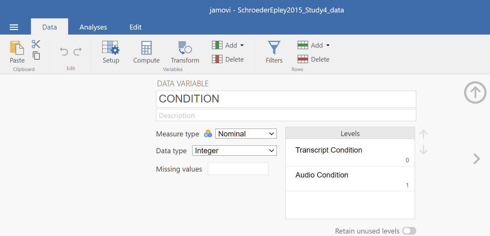
When you check CONDITION, notice that this Setup button has revealed the values used to signify the Audio and Transcript groups. Take note that these groups are signified by 0s and 1s. This coding helps the program to run our t-test. Keep in mind that whether we look at the codes or labels does not change anything about the data itself or any subsequent analyses; it is merely a cosmetic change.
Remember to check intellect while considering the information about the study (the context). Is intellect a variable measured on a continuous scale? Does it get represented by decimal-type data? (Hint: Be sure to carefully read the names of the variables during these exercises. Some variable names are similar and can lead to confusion when you select the variables to be included in your analysis.)
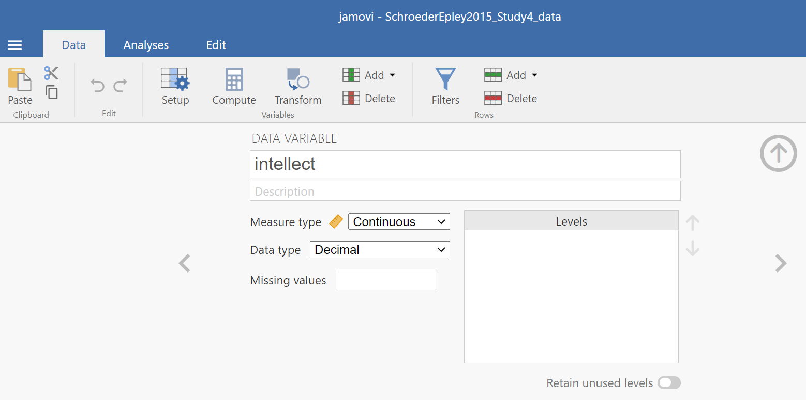
Remember to press the Setup button again or to press the upward facing arrows to return to a more full version of your data spreadsheet and Results panel:
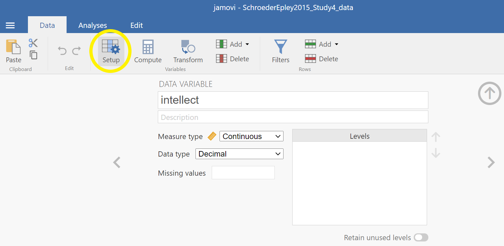
Or
Now, weâre ready to run the independent-samples t-test. Go to Analyses, then T-Tests, then Independent Samples T-test.
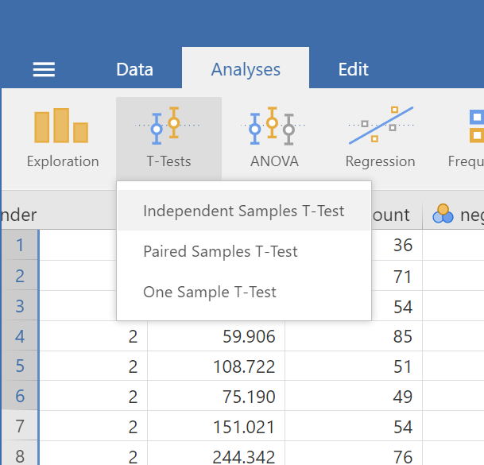
A window will appear asking you to specify which variable to use in this analysis. Remember, we are only using intellect, so find this variable in the left-hand list. One way you can find the intellect variable by clicking on the search icon, the one that looks like a magnifying glass, and then typing the name of the variable. Another way to find the variable is to use the slider at the right of the list of variables and move down until you see the intellect variable. Then, move the variable into the âDependent Variablesâ field on the right by highlighting the variable and using the arrow to move it.
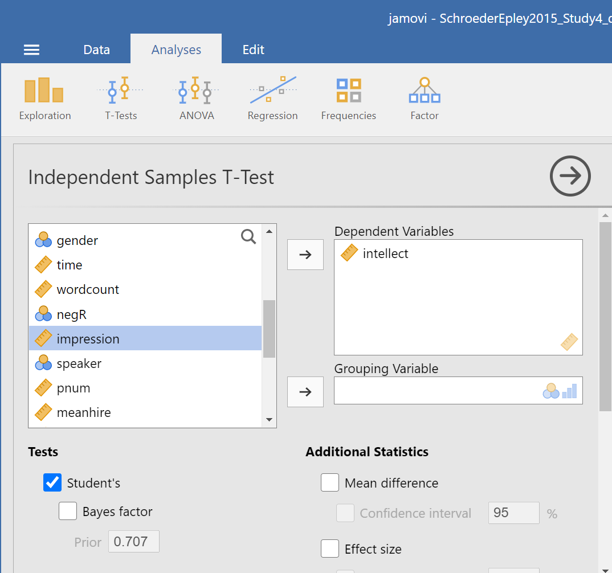
For the field labeled âGrouping Variable,â we will specify which variable is our independent variable. That variable is CONDITION (we have two conditions: audio and transcript). Move CONDITION into the âGrouping Variableâ field.
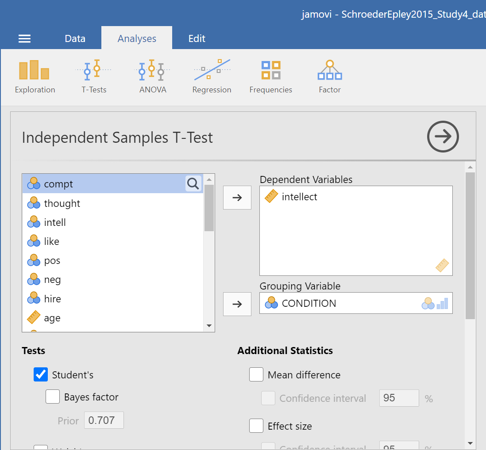
In the Results panel, jamovi will produce an output tables as follows:
The t-test output share some similarities with the paired t-test output we saw in Chapter 4 of this lab manual. The Independent Samples T-Test table contains a t-statistic obtained, the degrees of freedom, and a p-value. Much like we learned when discussing the paired-samples t-test output, we can click on the Independent Samples T-Test table to reveal the Analyses menu again, and click the Descriptives button to request a second table that contains useful descriptive statistics that help us understand the pattern of results and contextualize our inferential statistics. We can also request Effect size, the 95% Confidence interval, Welchâs, and some Assumption Checks.
In the case of an independent-samples t-test, one assumption made is that there is equality of variances. The groups being compared are assumed to have roughly equal variances. This test is called the Leveneâs test. Simply click on Homogeneity test, and the table showing the results will appear between the table depicting the independent-samples t-test and the Descriptives table. Conveniently, in jamovi, you can request another test to determine if the assumption of normality is also upheld. This test is called the Shapiro-Wilk test. It, too, is conveniently requested by clicking on Normality test. The results will appear right after the Independent Samples T-Test table.
When interpreting the second output table, or Shapiro-Wilk test, the rule is as follows: If the p-value in the table is smaller than your alpha level, which is often the conventional .05, then your data are not normally distributed. Is this a problem? It depends. Remember, the normality assumption of the t-test refers to the sampling distribution, not the distribution of the sample. If your sample size is reasonably large (N >= 30), you can usually rely on the central limit theorem to assuming your sampling distribution is normal.
When interpreting the third output table, or Leveneâs test, the rule is as follows: If the p-value in the table is smaller than your alpha level, then your variances are not equal and you should request Welchâs t-test. If the p-value for Leveneâs test is larger than alpha, then you can use the Studentâs t-test that is automatically generated when you request an independent t-test.
Some people may recommend that you always use the Welchâs t-test - whether the assumptions are upheld or violated.
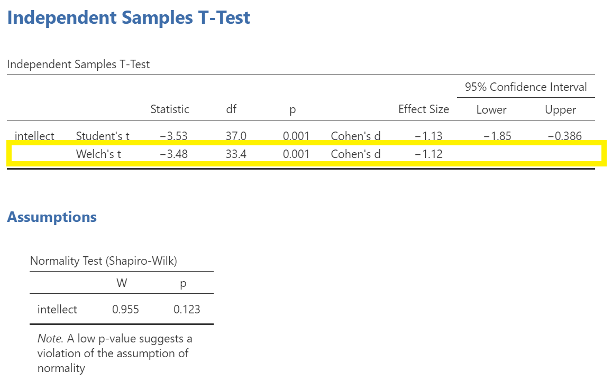
In this example, the p-value associated with the Shapiro-Wilk test is .12, which is greater than the conventional alpha level of .05, so the assumption of normality is upheld. The p-value associated with the Leveneâs test is .35, which is greater than the conventional alpha level of .05, so the assumption of homogeneity is upheld. You could report the results of the Student t-test, but we are still going to use the Welchâs t-test. The t-statistic for our independent-samples t-test is -3.48, the degrees of freedom are adjusted to 33.4, and the p-value for the t-test is .001. Note: Be sure to look at the p-value associated with the t-test and not Leveneâs test when you are interpreting your t-test results.
What does the t-test tell us about the data? We can put our finding into words to clarify:
Recruiter ratings of candidatesâ intellect when the recruiters heard audio job pitches (M = 6.63, SD = 1.61) are higher than their ratings of candidatesâ intellect when they read transcripts of pitches (M = 4.65, SD = 1.91). An independent t-test revealed that this difference is significant, t(33.4) = -3.48, p < .05, d = -1.12 (95% CI [-1.85,-0.39]).
5.7.3 Some APA formatting reminders for writing results sections
Always note the name of the test you performed (in this case, independent t-test, or independent-samples t-test) and whether the result is significant or non-significant (Note: We do not use the word insignificant.).
We usually round to two decimal places, except for p-values. If your p-value was .0001, it would be okay to write p = .0001 or p < .001.
Do not include a leading 0 before the decimal for the p-value (p = .001 not p = 0.001, or p < .05 not p < 0.05).
Yes, Iâm serious. No, I donât know why. Yes, it does seem a bit silly. Yes, you lose points if you donât adhere to APA format when requested to do so.
- Pay attention to spaces, parentheses, etc. APA is very picky about that. For example, itâs t(33.4) = -3.48 not t(33.4)=-3.48. There are spaces on either side of =, >, or < symbols.
5.7.4 Graphing your data
CONDITION in this experiment represents a discrete, categorical variable. Therefore, we will be using a bar chart to visualize this data. To begin, go to Analyses, then Exploration, and then Descriptives.
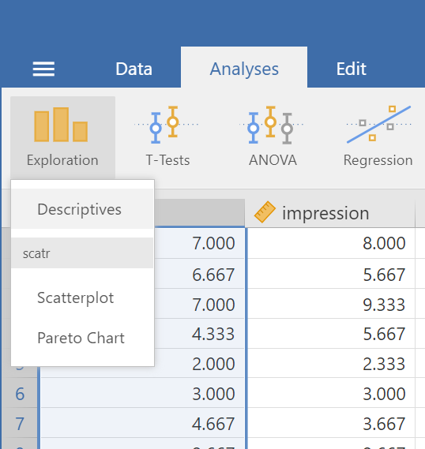
Next, move intellect to the âVariablesâ window by highlighting the variable and using the arrow, and move CONDITION to the âSplit byâ window.
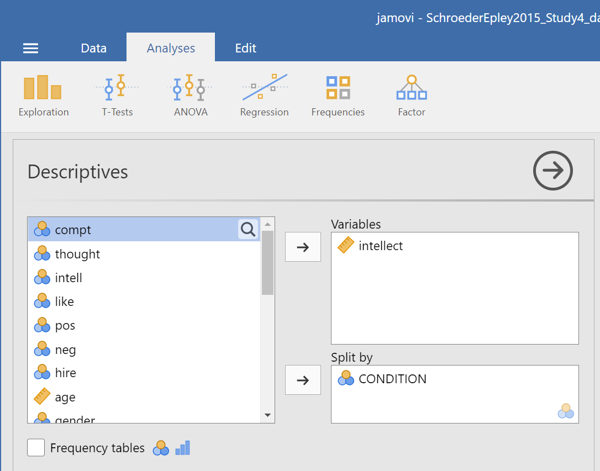
Click on Plots, and then click Bar plot.
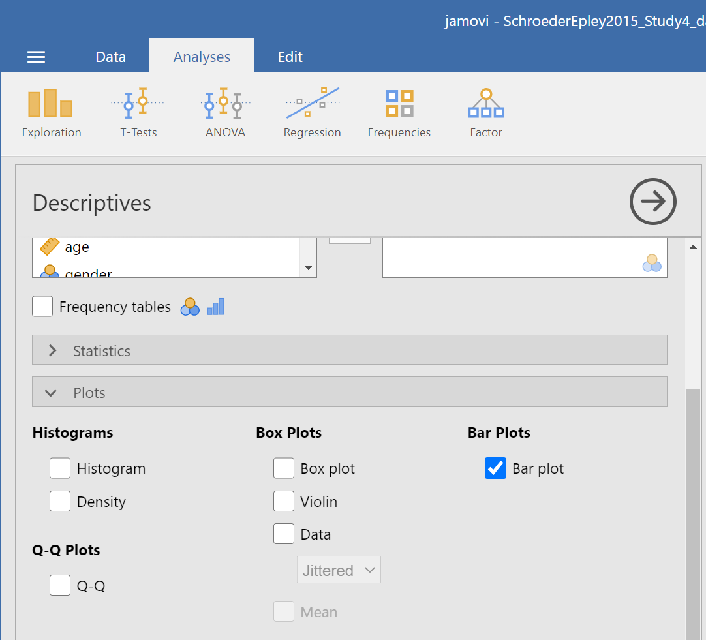
jamovi will produce a bar graph of your mean ratings for both audio and transcript conditions.
Note: Itâs always a good idea to compare your graph to the descriptive statistics to make sure it looks right. Another Important Note: Unfortunately, you cannot simply copy and paste the graph from jamovi into a paper that requires APA formatting. Be sure to use/model the other resources provided to you so as to create properly formatted graphs for your course assignments.
5.7.5 Optional exercises
At this point, youâve covered everything you need to successfully complete the homework assignment below. However, there are a number of different analyses we can practice with this dataset. This section walks you through some optional analyses to consolidate what weâve already covered as well as add breadth. If youâre running out of time, skip down to the Homework now. You can return to these exercises later (i.e., when studying).
5.7.5.1 Using a cut point to define groups for an independent t-test
Sometimes you will see groups defined with a non-nominal independent variable. For example, we might talk about defining countries as âoverweightâ or ânot overweightâ depending on whether 50% of their population was classified as overweight. The rate of overweight is known for each country, but we can divide the countries into two groups at an arbitrary cut point (in this case, a rate of 50%). Aside: This is a good example of how an ordinal, interval, or ratio variable might be considered to have distinct categories - you have to define the boundaries of the categories yourself first.
A commonly used cut point is the median value (this is called a âmedian splitâ). Letâs use the example of age in the current dataset. You can find the median value of age in different ways. Letâs go with a familiar path: Click Analyses, then Exploration, and then Descriptive Statistics. Move age to the âVariablesâ filed. If the median were not showing in the table visible in the Results panel, we could click Statistics and select Median . The first output table contains the median:
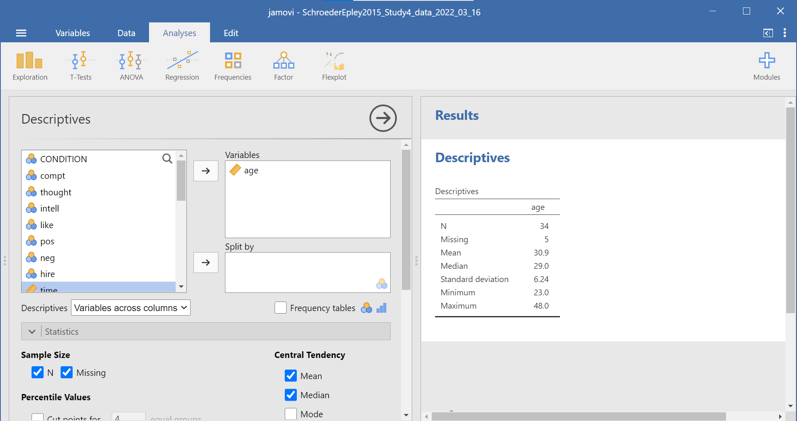
We can use the median of 29 as the cut point. Weâll be running an independent t-test to determine whether there is a significant difference in intellect between candidates under 29 years old and over 29 years old.
First, we will need to transform the age variable. Click Data, then Add, and then either Insert or Append. Notice that when you use Insert, the new, transformed variable is added to the left of whichever variable you have highlighted or were last working in (so I highlighted time). When you use Append, the new, transformed variable is added to the far right of all the variables.
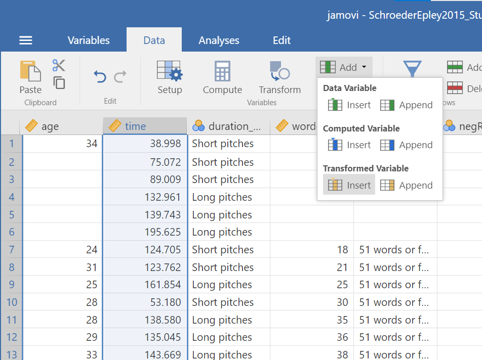
After clicking the commands to get the transformed variable, be sure to name the variable and to write a description. Select the Source variable, by clicking on the drop-down menu and selecting age.
Then, create a rule for jamovi to follow to populate the new variable column. To do so, click on using transform and Create New Transform.
A new panel will pop up and we will enter our transform rule here. First, we should name the transformation; we might use âAgeMedSplitâ for the transformation name. Next, we must write the recoding rule. Click on Add recode condition.
Since our median is 29, we might show that if our source variable has data that is equal to or less than 29, it should be recoded as a 1 which we will consider as a younger age group. The second part of the recoding rule will indicate what code we want to use if the first part of the rule is not true. Letâs use 2 as our other code, for an older age group. We can also indicate that the âMeasure typeâ is nominal; we have younger and older groups. Clarifying the scale of measurement is an important step as you want to use this transformed variable as a grouping variable later.
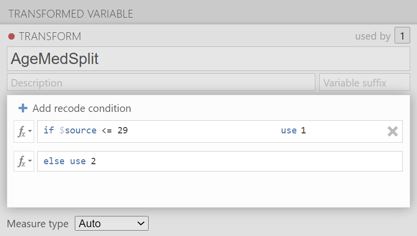
Click the downward facing arrow to close the transformation window.
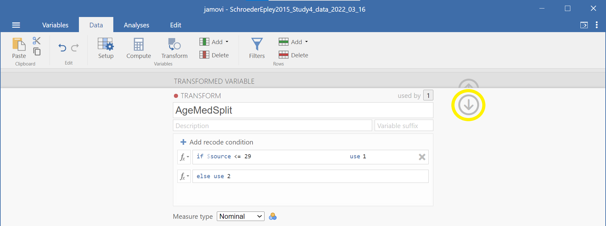
Click the upward facing arrow to close the transformed variable window.
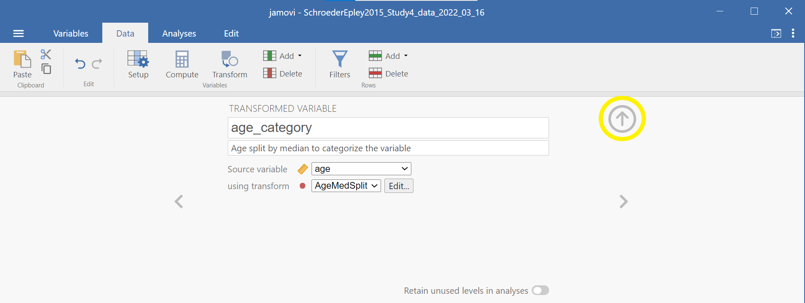
Having split the data by age group, we can now run the t-test on intellect. (Question: When considering the experimental design, would you say these age groups are manipulated or measured?) Click Analyses, T-Tests, and Independent Samples T-Test. Move intellect into the âDependent Variablesâ field by highlighting the variable and using the arrow. Move your newly created, the transformed variable, into the âGrouping Variableâ field in much the same way. In this image, you will see I named the transformed variable age_category.
Remember to click Descriptives, Effect size, and the 95% Confidence interval under âAdditional Statisticsâ to get the Descriptives table and Welchâs so that you can report the t-test without worrying whether or not the assumptions of homogeneity of variance and normality have been violated. You can also click to request these tests: Homogeneity test and Normality test.
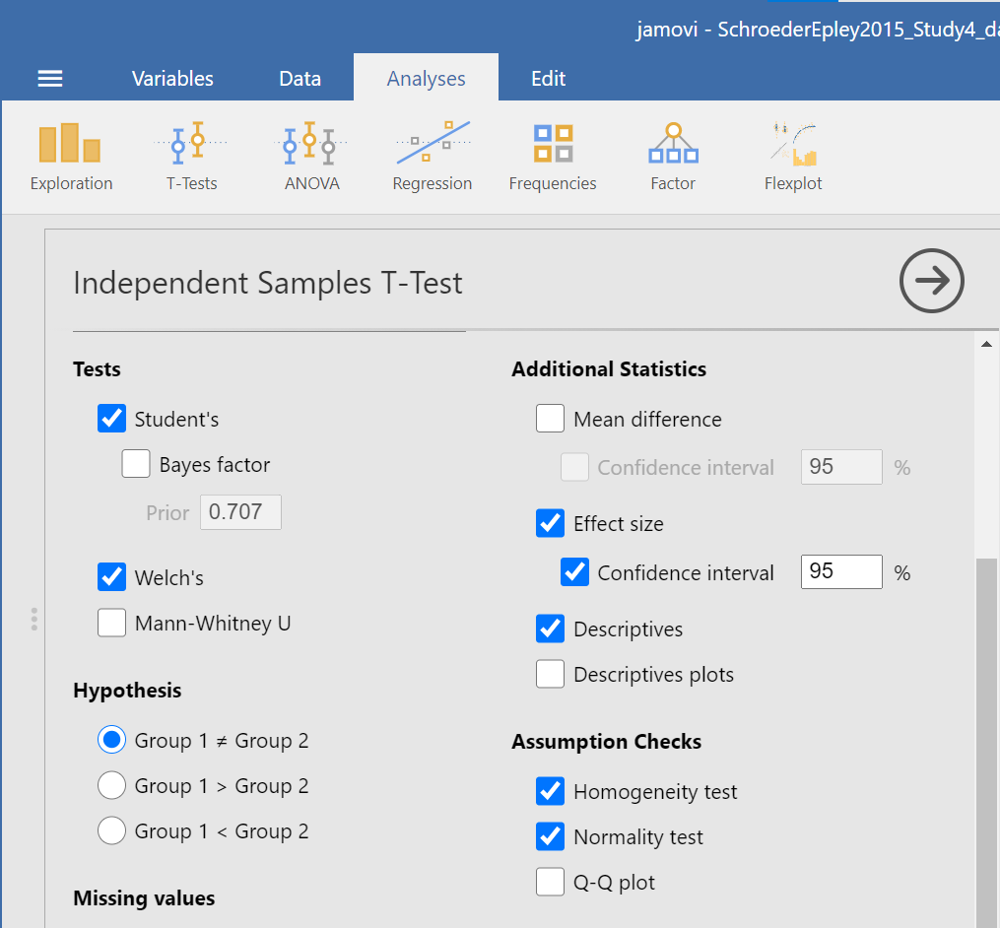
Practice writing a sentence describing the results, and then compare it to #1 in the âExample answers to optional activitiesâ below.
5.7.5.2 Example answers to optional activities
- Intellect ratings for candidates aged 29 or younger (M = 5.65, SD = 2.32) were not significantly different from intellect ratings for candidates over age 29 (M = 5.51, SD = 1.83), as demonstrated by an independent t-test [t(32) = 0.19, p > .05]. Note: If you included Cohenâs d, the value was 0.07, but we often donât report effect size if the effect was not significant.
or if you reported the statistics adding the Welchâs adjustmentâ¦
Intellect ratings for candidates aged 29 or younger (M = 5.65, SD = 2.32) were not significantly different from intellect ratings for candidates over age 29 (M = 5.51, SD = 1.83), as demonstrated by an independent t-test with Welchâs adjustment [t(32) = 0.19, p > .05].
5.7.6 Lab Homework #7
See Moodle.
5.7.7 Practice Problems
Using the data collected in PSYC 291, perform a median split on the Time 2 alcohol consumption variable. Do people who are higher consumers of alcohol experience different levels of anxiety at Time 2 (i.e., during midterms) compared to lower consumers of alcohol? Conduct the appropriate t-test. What can you conclude? Write your answers in APA format, including the 95% confidence interval and effect size (Cohenâs d). Graph the results.
Using the EngageNS data, run an independent-samples t-test to examine whether people who volunteer in their community (variable name = VOLUNTEER; 1 = yes, 2 = no) report feeling higher perceptions of belonging in the community (variable name = BELONGING). Run a second independent-samples t-test to examine whether volunteers report feeling more satisfied with their well-being (CIW_WELLB). What can you conclude from each t-test? Write your answers in APA format, including the 95% confidence intervals and effect sizes (Cohenâs d). Graph the data (Note that you will need to make up separate graphs to report the result of each of the t-tests).
Using the EngageNS data, run 3 separate independent samples t-tests to examine whether people who were born in Canada (BORN_CAN; 1 = yes, 2 = no) experience different levels of a) discrimination (DISCRIM1) due to their ethnicity/race/skin colour, b) life satisfaction (LIFESAT), and c) job security (SECURITY) than those not born in Canada. What can you conclude from each t-test? Write your answers in APA format, including the 95% confidence intervals and effect sizes (Cohenâs d). Graph the data (Note that you will need to make up separate graphs to report the result of each of the t-tests). Are there any correlations between DISCRIM1, LIFESAT, and SECURITY?
Using the EngageNS data, run 3 separate independent samples t-tests to examine whether people who have internet access at home (INTERNET; 1 = yes, 2 = no) report different levels of a) work-life balance (WL_BALANCE), b) reading books for pleasure (HM_READ), and c) playing board games/cards with family/friends (HM_CARDS) than those who do not have internet access at home. What can you conclude from each t-test? Write your answers in APA format, including the 95% confidence intervals and effect sizes (Cohenâs d). Graph the data (Note that you will need to make up separate graphs to report the result of each of the t-tests).